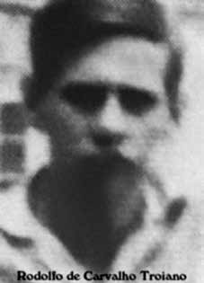

Rodolfo
de Carvalho
Troiano
CIRCUNSTÂNCIAS DA MORTE
A última referência a Rodolfo no Relatório Arroyo remonta à data de 24 de outubro de 1973. Segundo o documento, no dia 22 daquele mês, dois guerrilheiros do seu grupo dirigiram-se à região do Tabocão para encontrar o grupo chefiado por Nelson Lima Piauhy Dourado e, no dia seguinte, outros dois combatentes da guerrilha partiram em direção à estrada que vai para São Domingos (PA). Rodolfo estaria com a guerrilheira Sônia (Lúcia Maria de Souza) e dirigia-se ao encontro desses dois últimos companheiros, que acompanhavam um jovem camponês. Ângelo Arroyo relatou que não ocorreu o encontro de Rodolfo e Lúcia com os demais. A partir desse momento, não são registradas mais informações sobre “Manuel” no relatório.
Em depoimento ao Ministério Público Federal, de 2001, os trabalhadores rurais Luiz Martins dos Santos e Zulmira Pereira Neres declararam que estavam em sua antiga residência no Tabocão – como era conhecida a região de Brejo das Pacas – quando “Manoel” e “João Araguaia” (Dermeval da Silva Pereira) chegaram para entregar-lhes seu sobrinho Sebastião. Segundo os depoentes, o pai de Sebastião – Zé dos Santos – foi à Bacaba avisar aos militares sobre o retorno de seu filho e voltou acompanhado de 24 soldados.
Os militares teriam entrado na mata, disparado rajadas de tiros e voltado com um corpo envolto em um plástico azul, que foi sepultado na frente da casa de Luiz e Zulmira. Apesar de não deixarem os declarantes verem o corpo, os soldados relataram ser “Manoel”, que teria levado um tiro nas costas e dois na cabeça. Na publicação Documentos do SNI: Os mortos e desaparecidos na Guerrilha do Araguaia consta que, em 1976, Rodolfo teria estado com colegas em Juiz de Fora em campanha política para os candidatos Tarcísio Delgado e Ivan Barbosa de Castro e que, depois disso, teria viajado pela América do Sul (Uruguai e Argentina).
Nesse sentido, o Relatório do Ministério do Exército para o ministro da Justiça de 1993 também dispõe que Rodolfo teria deixado o Brasil rumo ao Uruguai ou à Argentina. Contudo, outra fonte do poder repressivo registra a informação da morte de Rodolfo em data diferente, indicando erro nos dados anteriores. De acordo com o Relatório do Ministério da Marinha, entregue também em 1993, consta que Rodolfo teria sido morto em 12 de janeiro de 1974.
The last reference to Rodolfo in the Arroyo Report dates back to October 24, 1973. According to the document, on the 22nd of that month, two guerrillas from his group went to the Tabocão region to meet the group led by Nelson Lima Piauhy Dourado and, the following day, two other guerrilla fighters left towards the road that goes to São Domingos (PA). Rodolfo was with the guerrilla Sônia (Lúcia Maria de Souza) and was heading to meet these last two companions, who were accompanying a young peasant. Ângelo Arroyo reported that Rodolfo and Lúcia's meeting with the others did not occur. From that moment on, no more information about “Manuel” is recorded in the report.
In a statement to the Federal Public Ministry in 2001, rural workers Luiz Martins dos Santos and Zulmira Pereira Neres stated that they were at their former residence in Tabocão – as the Brejo das Pacas region was known – when “Manoel” and “João Araguaia” (Dermeval da Silva Pereira) arrived to hand over their nephew Sebastião. According to witnesses, Sebastião's father – Zé dos Santos – went to Bacaba to inform the military about his son's return and returned accompanied by 24 soldiers.
The soldiers entered the forest, fired shots and returned with a body wrapped in blue plastic, which was buried in front of Luiz and Zulmira's house. Despite not letting the deponents see the body, the soldiers reported that it was “Manoel”, who had been shot once in the back and twice in the head. In the publication Documentos do SNI: The dead and missing in the Guerrilha do Araguaia it is stated that, in 1976, Rodolfo had been with colleagues in Juiz de Fora on a political campaign for the candidates Tarcísio Delgado and Ivan Barbosa de Castro and that, after that, he had traveled through South America (Uruguay and Argentina).
In this sense, the 1993 Report from the Ministry of the Army to the Minister of Justice also states that Rodolfo would have left Brazil for Uruguay or Argentina. However, another source of repressive power records information about Rodolfo's death on a different date, indicating an error in the previous data. According to the Ministry of the Navy Report, also delivered in 1993, it appears that Rodolfo was killed on January 12, 1974.
La última referencia a Rodolfo en el Informe Arroyo data del 24 de octubre de 1973. Según el documento, el 22 de ese mes, dos guerrilleros de su grupo fueron a la región de Tabocão para encontrarse con el grupo liderado por Nelson Lima Piauhy Dourado y, al día siguiente, otros dos guerrilleros partieron hacia la carretera que lleva a São Domingos (PA). Rodolfo estaba con la guerrillera Sônia (Lúcia Maria de Souza) y se dirigía al encuentro de estos dos últimos compañeros, que acompañaban a un joven campesino. Ângelo Arroyo informó que el encuentro de Rodolfo y Lúcia con los demás no se produjo. A partir de ese momento no se registra más información sobre “Manuel” en el informe.
En una declaración al Ministerio Público Federal en 2001, los trabajadores rurales Luiz Martins dos Santos y Zulmira Pereira Neres declararon que estaban en su antigua residencia en Tabocão – como se conocía la región de Brejo das Pacas – cuando “Manoel” y “João Araguaia” (Dermeval da Silva Pereira) llegaron para entregar a su sobrino Sebastião. Según testigos, el padre de Sebastião – Zé dos Santos – fue a Bacaba para informar a los militares sobre el regreso de su hijo y regresó acompañado de 24 soldados.
Los militares ingresaron al bosque, dispararon y regresaron con un cuerpo envuelto en plástico azul, que fue enterrado frente a la casa de Luiz y Zulmira. A pesar de no dejar ver el cuerpo a los declarantes, los militares informaron que se trataba de “Manoel”, quien había recibido un disparo en la espalda y dos disparos en la cabeza. En la publicación Documentos do SNI: Los muertos y desaparecidos en la Guerrilha do Araguaia se afirma que, en 1976, Rodolfo había estado con colegas en Juiz de Fora en una campaña política de los candidatos Tarcísio Delgado e Ivan Barbosa de Castro y que, luego, había viajado por América del Sur (Uruguay y Argentina).
En este sentido, el Informe del Ministerio del Ejército al Ministro de Justicia de 1993 también señala que Rodolfo habría salido de Brasil hacia Uruguay o Argentina. Sin embargo, otra fuente del poder represivo registra información sobre la muerte de Rodolfo en otra fecha, lo que indica un error en los datos anteriores. Según el Informe del Ministerio de Marina, también entregado en 1993, consta que Rodolfo fue asesinado el 12 de enero de 1974.